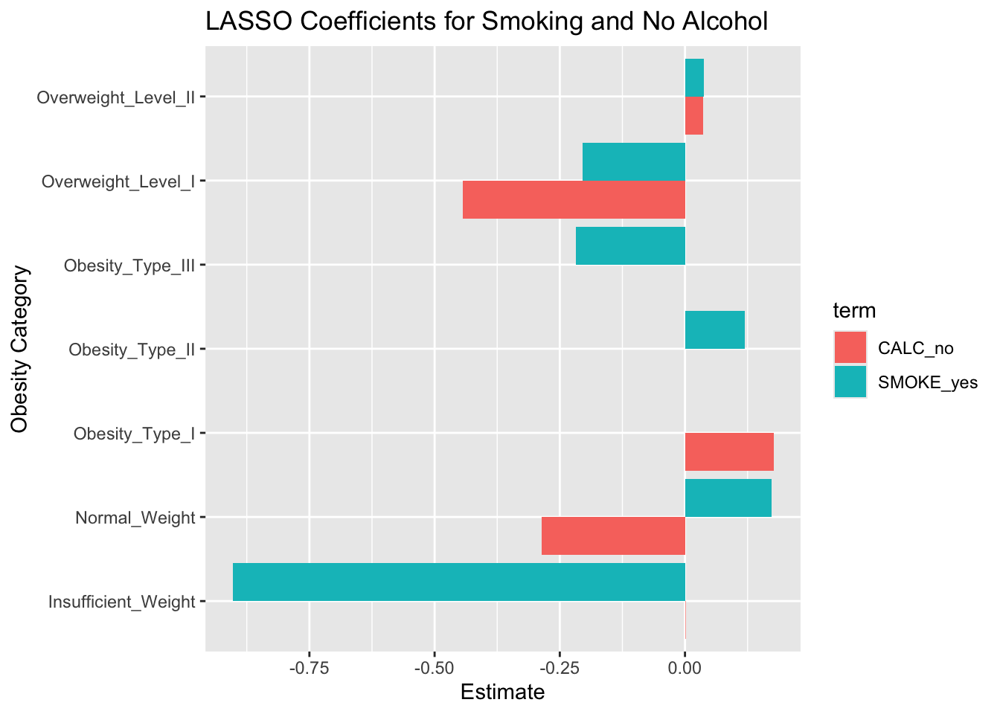

library(here)
library(readr)
library(dplyr)
library(ggplot2)
library(rsample)
library(dplyr)
library(naniar)
library(tidymodels)
library(nnet)
library(tibble)
library(yardstick)
library(broom)
library(glmnet)Understanding the Impact of Alcohol and Smoking on Obesity Levels
Motivation and Context
This project explores how lifestyle habits like drinking alcohol and smoking may be related to different levels of obesity. Obesity is a major health concern that can lead to serious conditions such as heart disease, diabetes, and certain types of cancer. While many factors can affect a person’s weight, habits like drinking and smoking are common and often overlooked in discussions about health.
I chose this topic because it connects real world health issues with data analysis. I wanted to better understand whether alcohol use or smoking are linked to obesity, and if so, how strong those connections are. This kind of information can be helpful not just for individuals who want to learn more about their own health, but also for doctors, public health professionals, or policy makers who want to support healthier communities. By using data and statistical models, this project aims to uncover patterns that can make those links clearer.
In this dataset, obesity is divided into seven categories: Insufficient Weight, Normal Weight, Overweight Level I, Overweight Level II, Obesity Type I, Obesity Type II, and Obesity Type III. These are based on physical measurements like weight and height, similar to how BMI is used in medical setting. For example, “Normal Weight” represents a healthy range, while “Overweight Levels I and II” suggest increasing excess weight. “Obesity Types I, II, and III” indicate progressively higher degrees of obesity, with Type III being the most extreme. Understanding how behaviors like smoking and drinking appear across these categories can help reveal what role they might play in a person’s weight and overall health.
Main Objective
The main goal of this project is to investigate if alcohol consumption and smoking relate to obesity levels. I wanted to see whether these habits are useful for predicting which obesity category a person falls into, and whether they still matter when other lifestyle variables are also considered. By analyzing these variables in full models, the project uncovers patterns that show how everyday decisions may relate to obesity risk.
This analysis is meant to provide insight into whether drinking and smoking are just common lifestyle factors or if they actually contribute to higher obesity risk.
Packages Used In This Analysis
| Package | Use |
|---|---|
| here | to easily load and save data |
| readr | to import the CSV file data |
| dplyr | to massage and summarize data |
| rsample | to split data into training and test sets |
| naniar | to check for missing values |
| ggplot2 | to create nice looking and informative graphs |
| nnet | to fit multinomial logistic regression |
| tibble | to create and manipulate tidy data frames |
| yardstick | to calculate model performance metrics like accuracy |
| broom | to tidy up model output for easier interpretation |
| glmnet | to fit LASSO models using regularization |
Data Description
The data used in this project comes from the UCI Machine Learning Repository, and it is titled Estimation of Obesity Levels Based on Eating Habits and Physical Condition. This dataset can be accessed here. It was created by researchers Fabio Palechor and Alexis de la Hoz Manotas and published around 2018. The data was collected using a web based survey where anonymous participants from Mexico, Peru and Colombia reported information about their lifestyle habits and physical conditions. Participants were between the ages of 14 and 61 and answered questions related to eating behavior, water intake, alcohol consumption, smoking and more.
The goal of the original study was to explore how these lifestyle factors relate to obesity. The dataset includes 2,111 observations and 17 variables. The otucome variable, NObeyesdad, classifies individuals into one of the seven categories that range from Insufficient Weight to Obesity Type III. These categories are based on physical measurements like height and weight and are structured similarly to BMI classifications.
To improve class balance, the researches used SMOTE (Synthetic Minority Over-sampling Technique) in Weka to generate 77% of the data synthetically. The remaining 23% comes from real survey responses. This approach helps ensure that all obesity categories are well represented, which can improve model performance across the full range of outcomes.
Data Limitations
77% of the data was synthetically generated using SMOTE to balance the obesity categories. While this helps with modeling, it may not fully reflect real world variation, especially since it’s unclear which classes were originally underrepresented.
The data is self reported which can lead to inaccurate answers, especially on sensitive topics like smoking or drinking.
The dataset only includes individuals from Mexico, Peru and Colombia, so the results may not apply to other populations. There can be important factors like socioeconomic status that are also missing.
The dataset doesn’t define what each obesity category means, which makes interpretation more difficult.
Data Wrangling
# converting character variables to factors
obesity <- obesity |>
mutate(across(where(is.character), as.factor))
# splitting data
set.seed(12345)
obesity_split <- initial_split(obesity, prop = 0.80)
obesity_train <- training(obesity_split)
obesity_test <- testing(obesity_split)total_missing <- sum(is.na(obesity_train))
total_missing[1] 0obesity_train |>
miss_var_summary()# A tibble: 17 × 3
variable n_miss pct_miss
<chr> <int> <num>
1 Gender 0 0
2 Age 0 0
3 Height 0 0
4 Weight 0 0
5 family_history_with_overweight 0 0
6 FAVC 0 0
7 FCVC 0 0
8 NCP 0 0
9 CAEC 0 0
10 SMOKE 0 0
11 CH2O 0 0
12 SCC 0 0
13 FAF 0 0
14 TUE 0 0
15 CALC 0 0
16 MTRANS 0 0
17 NObeyesdad 0 0# make sure outcome variable is a factor
obesity_train$NObeyesdad <- as.factor(obesity_train$NObeyesdad)
obesity_test$NObeyesdad <- as.factor(obesity_test$NObeyesdad)Exploratory Data Analysis
Show the code
ggplot(obesity_train,
aes(x = NObeyesdad)) +
geom_bar(fill = "lightblue") +
labs(title = "Count of Individuals by Obesity Category",
x = "Obesity Category",
y = "Count") +
theme(axis.text.x = element_text(angle = 45, hjust = 1))
This distribution of individuals across obesity categories is fairly balanced, with slightly more cases in the Obesity Type I-III groups. This makes sense since SMOTE was used to generate synthetic data and balance the classes.
Show the code
ggplot(obesity_train,
aes(x = NObeyesdad, y = Weight)) +
geom_boxplot(fill = "purple") +
labs(
title = "Weight Distribution by Obesity Category",
x = "Obesity Category",
y = "Weight (kg)"
) +
theme(axis.text.x = element_text(angle = 45, hjust = 1))
The weight distribution increases clearly across the obesity categories, showing a strong relationship between higher weight are more severe obesity levels. This helps confirm that the target variable aligns logically with actual weight measurements.
Show the code
ggplot(obesity_train,
aes(x = NObeyesdad, fill = CALC)) +
geom_bar(position = "dodge") +
labs(
title = "Alcohol Consumption by Obesity Category",
x = "Obesity Category",
y = "Count",
fill = "Alcohol Consumption"
) + theme(axis.text.x = element_text(angle = 45, hjust = 1 ))
Most individuals across obesity categories reported drinking alcohol “sometimes” with a drop in “no” responses as obesity levels increase. This might suggest a loose association between occasional alcohol use and higher obesity levels.
Show the code
ggplot(obesity_train,
aes(x = NObeyesdad, fill = SMOKE)) +
geom_bar(position = "dodge") +
labs(
title = "Proportion of Smokers by Obesity Category",
x = "Obesity Category",
y = "Count",
fill = "Smoke"
) + theme(axis.text.x = element_text(angle = 45, hjust = 1 ))
Most individuals across all obesity categories reported not smoking, with only a small portion indicating that they do. This suggests smoking may not be a common behavior in the sample, making its relationship to obesity harder to detect visually.
Show the code
ggplot(obesity_train,
aes(x = NObeyesdad,
y = FAF)) +
geom_boxplot(fill = "lightpink") +
labs(
title = "Physical Activity (FAF) by Obesity Category",
x = "Obesity Category",
y = "Physical Activity Frequency (FAF)"
) +
theme(axis.text.x = element_text(angle = 45, hjust = 1))
While this project mainly focuses on alcohol consumption and smoking, physical activity (FAF) is another lifestyle factor that was included in the models. The plot shows some variation in physical activity across obesity categories, but this variable was not a primary focus in the analysis.
Modeling
Multinomial Logistic Regression
I started with a multinomial logistic regression model because it works well for outcomes with more than two categories. It’s also easy to interpret since it gives coefficients that show how each predictor affects the odds of being in a certain obesity category compared to a reference group. This helps me see whether alcohol (CALC)use and smoking (SMOKE) are linked to different obesity levels and how strong those links are.
Before fitting the model, I removed Height and Weight from the predictors to avoid overly large coefficient values that could inflate model accuracy. I then fit a multinomial logistic regression model using all remaining predictors to classify individuals into one of the seven obesity categories.
To understand how alcohol and smoking were associated with obesity, I extracted and filtered the model output to only show the coefficients related to SMOKE and CALC. The estimates show how much more (or less) likely someone is to be in a given category compared to the reference, based on those behaviors.
# all predictors to model the 7-category outcome
multinom_model <- multinom(NObeyesdad ~ . - Height - Weight, data = obesity_train)# weights: 161 (132 variable)
initial value 3284.696332
iter 10 value 2521.452313
iter 20 value 2055.838062
iter 30 value 1842.942856
iter 40 value 1771.136782
iter 50 value 1726.623624
iter 60 value 1708.439310
iter 70 value 1696.562854
iter 80 value 1684.548609
iter 90 value 1681.821920
iter 100 value 1672.112474
final value 1672.112474
stopped after 100 iterationstidy_multinom <- tidy(multinom_model)
smoke_calc <- tidy_multinom |>
filter(term %in% c("SMOKEyes", "CALCno", "CALCsometimes", "CALCalways"))
smoke_calc# A tibble: 12 × 6
y.level term estimate std.error statistic p.value
<chr> <chr> <dbl> <dbl> <dbl> <dbl>
1 Normal_Weight SMOKEyes 14.8 0.651 22.8 3.85e-115
2 Normal_Weight CALCno -8.86 0.508 -17.4 4.29e- 68
3 Obesity_Type_I SMOKEyes 13.4 0.752 17.9 1.74e- 71
4 Obesity_Type_I CALCno -1.37 0.578 -2.36 1.81e- 2
5 Obesity_Type_II SMOKEyes 14.5 0.760 19.0 7.90e- 81
6 Obesity_Type_II CALCno -5.70 0.776 -7.34 2.14e- 13
7 Obesity_Type_III SMOKEyes 11.6 1.62 7.17 7.28e- 13
8 Obesity_Type_III CALCno -28.3 3.38 -8.37 5.56e- 17
9 Overweight_Level_I SMOKEyes 11.9 1.04 11.4 2.38e- 30
10 Overweight_Level_I CALCno -1.28 0.578 -2.21 2.73e- 2
11 Overweight_Level_II SMOKEyes 13.7 0.641 21.3 7.66e-101
12 Overweight_Level_II CALCno 1.57 0.606 2.59 9.57e- 3The coefficients for SMOKEyes are all positive and significant which means smoking is pretty strongly linked to higher obesity categories. For alcohol, the results are less clear. CALCno (people who don’t drink) had a mix, some categories showed a strong negative relationship, while others didn’t show much. So overall, smoking seems to have a more consistent impact than alcohol.
I used the model to predict obesity categories on the test set and created a confusion matrix to see how well the predictions matched the actual values. This helps show which categories the model got right and where it made mistakes.
# predict on obesity category for each oberservation
multinom_preds <- predict(multinom_model, newdata = obesity_test)
# results tibble true and predicted labels
multinom_results <- tibble(
truth = obesity_test$NObeyesdad,
prediction = multinom_preds
)
# evaluate the model performance
conf_mat(multinom_results, truth = truth, estimate = prediction) Truth
Prediction Insufficient_Weight Normal_Weight Obesity_Type_I
Insufficient_Weight 38 18 1
Normal_Weight 5 26 4
Obesity_Type_I 1 4 51
Obesity_Type_II 2 2 15
Obesity_Type_III 0 0 1
Overweight_Level_I 1 10 11
Overweight_Level_II 2 4 9
Truth
Prediction Obesity_Type_II Obesity_Type_III Overweight_Level_I
Insufficient_Weight 0 0 2
Normal_Weight 0 0 11
Obesity_Type_I 1 0 7
Obesity_Type_II 50 0 7
Obesity_Type_III 0 62 0
Overweight_Level_I 0 0 25
Overweight_Level_II 2 0 5
Truth
Prediction Overweight_Level_II
Insufficient_Weight 1
Normal_Weight 2
Obesity_Type_I 12
Obesity_Type_II 14
Obesity_Type_III 0
Overweight_Level_I 2
Overweight_Level_II 15This confusion matrix shows that the model did a solid job overall, especially for the extreme groups like Obesity Type III and Obesity Type I, where most predictions were correct. You can see that Obesity Type III had 62 correct predictions and no major confusion. There was a bit more mixing between Normal Weight, Overweight Levels, and Obesity Type I, which makes sense since those groups are probably harder to tell apart based on habits. Overweight Level II was a little more difficult, it got confused the most with the Obesity Types I and II. Still, the model overall handled most categories well.
accuracy(multinom_results, truth = truth, estimate = prediction)# A tibble: 1 × 3
.metric .estimator .estimate
<chr> <chr> <dbl>
1 accuracy multiclass 0.631I used accuracy and a confusion matrix to evaluate how well the model performed. Accuracy is a simple and common metric that shows what proportion of the predictions were correct overall. It’s calculated by dividing the number of correct predictions by the total number of predictions. I also included a confusion matrix because accuracy alone doesn’t always show how the model did for each specific class. The confusion matrix helps me see which categories were predicted correctly and which ones the model mixed up, so I can tell if it’s doing well across all obesity levels.
LASSO
To complement the multinomial regression model, I also use a LASSO model. LASSO works by shrinking the coefficients of less important predictors all the way to zero. This means it automatically removes variables that don’t contribute to much to predicting the outcome. I wanted to see if whether smoking and alcohol consumption would still be selected as important predictors after the model was simplified.
I created the model, recipe and workflow as shown below. Categorical variables were converted into dummy variables and all numeric variables were standardized to the same scale since LASSO is sensitive to variable scaling. I also removed Height and Weight so we can see what LASSO selects without those variables dominating the model.
lasso_model <- multinom_reg(mode = "classification", engine = "glmnet",
penalty = tune(),
mixture = 1) # 1 is LASSO
lasso_recipe <- recipe(NObeyesdad ~ ., data = obesity_train) |>
step_rm(Height, Weight) |>
step_dummy(all_nominal_predictors()) |> # since they are categorical
step_normalize(all_numeric_predictors()) # same scale
lasso_wflow <- workflow() |>
add_model(lasso_model) |>
add_recipe(lasso_recipe)I used 5 fold cross validation to tune the penalty parameter. I tested 25 different values to give the model a good range of penalty values to try without making the tuning process take too long and selected the final model using the one-standard-error rule, which prefers a simpler model that still performs well.
set.seed(12345)
cv_folds <- vfold_cv(obesity_train, v = 5)
lasso_tune <- tune_grid(
lasso_wflow,
resamples = cv_folds,
grid = 25 # different values
)I picked the final penalty using the one-standard-error rule, which favors a simper model that still performs well.
lasso_best <- lasso_tune |>
select_by_one_std_err(penalty, desc(penalty))
lasso_best# A tibble: 1 × 2
penalty .config
<dbl> <chr>
1 2.08e-10 Preprocessor1_Model01The LASSO model chose a very small penalty, which means most variables were kept in the model instead of being shrunk to zero.
I graphed the mean accuracy for each penalty value tested during cross validation. This helped me visualize how model performance changed as penalty increased.
Show the code
lasso_tune |>
collect_metrics() |>
filter(.metric == "accuracy") |>
ggplot(aes(x = penalty, y = mean)) +
geom_point() +
geom_line() +
scale_x_log10() +
labs(title = "Accuracy vs Penalty", x = "Penalty", y = "Mean Accuracy")This plot shows that accuracy stayed high for small penalties and dropped sharply once the penalty became to large. This means that smoking and alcohol likely contribute useful information.
I finalized the LASSO model using the best penalty value from tuning, then fit the model to the training data for evaluation.
lasso_wflow_final <- lasso_wflow |>
finalize_workflow(parameters = lasso_best)
lasso_fit <- lasso_wflow_final |>
fit(data = obesity_train)I extracted the LASSO model coefficients and filtered for the smoking and alcohol terms to see whether those variables were kept in the final model.
lasso_coef <- lasso_fit |>
broom::tidy()
lasso_coef |>
filter(term %in% c("SMOKE_yes", "CALC_no", "CALC_always", "CALC_sometimes"))# A tibble: 14 × 4
class term estimate penalty
<chr> <chr> <dbl> <dbl>
1 Insufficient_Weight SMOKE_yes -0.904 2.08e-10
2 Insufficient_Weight CALC_no 0.000951 2.08e-10
3 Normal_Weight SMOKE_yes 0.173 2.08e-10
4 Normal_Weight CALC_no -0.286 2.08e-10
5 Obesity_Type_I SMOKE_yes 0 2.08e-10
6 Obesity_Type_I CALC_no 0.177 2.08e-10
7 Obesity_Type_II SMOKE_yes 0.119 2.08e-10
8 Obesity_Type_II CALC_no 0 2.08e-10
9 Obesity_Type_III SMOKE_yes -0.217 2.08e-10
10 Obesity_Type_III CALC_no -0.0000198 2.08e-10
11 Overweight_Level_I SMOKE_yes -0.204 2.08e-10
12 Overweight_Level_I CALC_no -0.444 2.08e-10
13 Overweight_Level_II SMOKE_yes 0.0374 2.08e-10
14 Overweight_Level_II CALC_no 0.0363 2.08e-10Based on the LASSO results, smoking appears to have a small but consistent relationship with obesity, while the only alcohol related variable that was helpful was “no alcohol.” This suggests that people who don’t drink may stand out more in terms of obesity risk, but overall, neither smoking nor alcohol showed strong predictive power on their own.
lasso_preds <- predict(lasso_fit, new_data = obesity_test, type = "class")
lasso_results <- tibble(
truth = obesity_test$NObeyesdad,
prediction = lasso_preds$.pred_class
)
accuracy(lasso_results, truth = truth, estimate = prediction)# A tibble: 1 × 3
.metric .estimator .estimate
<chr> <chr> <dbl>
1 accuracy multiclass 0.634The LASSO model had an accuracy of about 63.4% which is very similar to the multinomial regression model’s accuracy of 63.1%. This shows that even though LASSO simplified the model by removing some predictors, it still performed just as well when it came to predicting the obesity categories.
Insights
lasso_coef |>
filter(term %in% c("SMOKE_yes", "CALC_no")) |>
ggplot(aes(x = class, y = estimate, fill = term)) +
geom_col(position = "dodge") +
coord_flip() +
labs(title = "LASSO Coefficients for Smoking and No Alcohol",
x = "Obesity Category", y = "Estimate")
This plot shows the LASSO coefficients for smoking and not drinking across obesity categories. Most of the coefficients are close to zero, and a few are only slightly positive or negative. This suggests that neither smoking nor alcohol consumption is a strong predictor of obesity in this dataset. While smoking was kept in more categories than alcohol, the effect sizes are still small, meaning it doesn’t consistently or strongly impact the odds of being in a specific obesity group. Overall, these behaviors don’t appear to explain much variation in obesity status on their own.
Limitations and Future Work
One key limitation of my model is that it doesn’t predict certain obesity categories very well. For example, in the multinomial confusion matrix, some classes like Overweight Level II were often confused with other categories. This may be because the predictors used like smoking and alcohol consumption don’t carry enough unique information to clearly separate these groups.
Another limitation is that I removed variables like Height and Weight and physical activity to focus just on lifestyle behaviors. While this helped isolate the effects of smoking and alcohol, it also meant that I left out some of the most predictive features, which most likely reduced model accuracy.
Future work could explore adding more variables such as diet, exercise and many other factors to get a fuller picture of what contributes to obesity. Also, collecting real-world data instead of using synthetically balanced datasets might offer more realistic results.